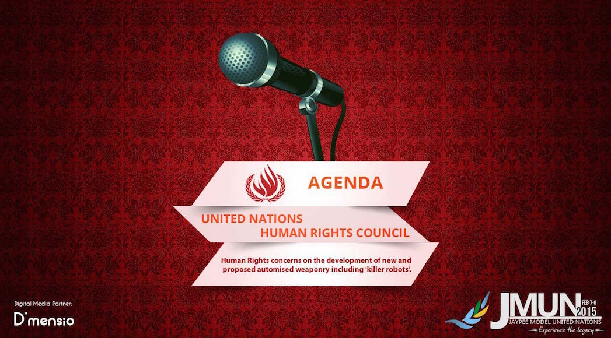

The United Nations Human Rights Council

The United Nations Human Rights Council
The United Nations Human Rights Council is a United Nations System inter-governmental body focused on promoting and protecting human rights around the world.
The UNHRC has addressed conflicts including the Israeli-Palestinian conflict and also addresses rights-related situations in countries such as in Burma, Guinea, North Korea, Côte d'Ivoire, Kyrgyzstan, Syria, Libya, Iran, and Sri Lanka. The UNHRC also addresses important thematic human rights issues such as freedom of association and assembly, freedom of expression, freedom of belief and religion, women’s rights, LGBT rights, and the rights of racial and ethnic minorities. Established in 2006 as the successor to the UNCHR, the HRC has 47 members The UN General Assembly elects the members who occupy the UNHRC's 47 seats. The General Assembly takes into account the candidate States’ contribution to the promotion and protection of human rights, as well as their voluntary pledges and commitments in this regard. The term of each seat is three years, and no member may occupy a seat for more than two consecutive terms. The current president is Mr Baudelaire Ndong Ella from Gabon.
This time we delve into future in the HRC simulation at JMUN with the delegates deliberating on issue of human rights concerns due to development of automated weaponry.